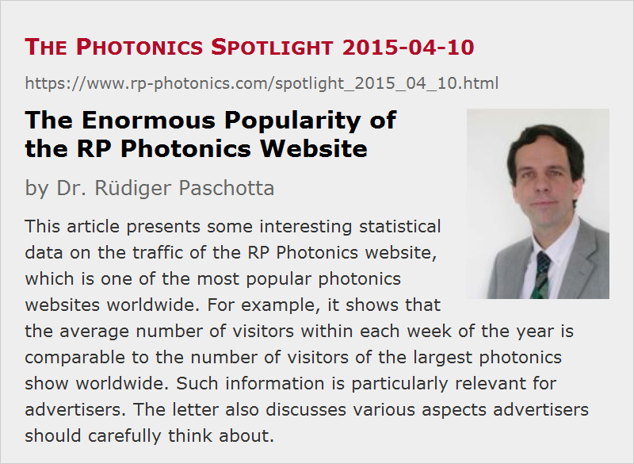

The Enormous Popularity of the RP Photonics Website
Posted on 2015-04-10 as a part of the Photonics Spotlight (available as e-mail newsletter!)
Permanent link: https://www.rp-photonics.com/spotlight_2015_04_10.html
Author: Dr. Rüdiger Paschotta, RP Photonics Consulting GmbH
Abstract: This article presents some interesting statistical data on the traffic of the RP Photonics website, which is one of the most popular photonics websites worldwide. For example, it shows that the average number of visitors within each week of the year is comparable to the number of visitors of the largest photonics show worldwide. Such information is particularly relevant for advertisers. The letter also discusses various aspects advertisers should carefully think about.

As a reader of this newsletter, you are probably aware that the website of RP Photonics is one of the most popular ones in the area of photonics. I thought that some may be interested to learn a bit more in detail what kind of traffic numbers we have reached after a bit over 10 years. Of course, such information is most relevant for those selling photonics products, but others may just enjoy a look at some mind-boggling numbers.
An important measure is the number of page views within one month. This tells you how often some user has got one page of the website displayed in his browser software. In March 2015, our statistics software counted as many as 217,428 page views, caused by about 100,000 different visitors. In 2014, we had around 170,000 views per month on average.
The Biggest Photonics Websites
You probably know optics.org, operated by the large institution SPIE over decades. According to their media information of 2014, they got about 108,000 page views per month – certainly respectable, but far behind RP Photonics.
In fact, I'm aware of only a single photonics website reporting more traffic than us: photonics.com with 237,000 page views per month in 2014.
More Details
In contrast to others, we publish interesting details concerning how the traffic was spread over different parts of the website:
- The largest traffic driver is the famous Encyclopedia of Laser Physics and Technology, having obtained 181,308 views in March.
- The RP Photonics Buyer's Guide, existing since 2012, got 14,913 views. It happened 8,673 times that a visitor was referred to a supplier's website from there.
The rest has been devoted to our regular company pages, describing our technical consulting services and simulation software, but also containing some interesting physics-based tutorials.
By the way, you can always get up-to-date statistical traffic information on our website. That page also tells you how carefully we filter our traffic data, making sure that they are not significantly affected by certain robots, for example.
Comparing with Photonics West
Each year, SPIE organizes Photonics West in San Francisco, the biggest laser show worldwide with a couple of increasingly important conferences around. In 2015, SPIE registered over 21,000 visitors there. It is definitely impressive to see many thousands of visitors walking through the exhibition floors – but keep in mind that we had 100,000 on our website in March alone … So there is one week per year where tens of thousands attend Photonics West, but in each of 52 weeks per year we have on average roughly that amount of traffic on our website.
Advertisers Need to Know Traffic Data – and Think About Them
Statistical data as reported above are most relevant for advertisers. Indeed, RP Photonics does offer online advertising in different forms:
- There are large banners, appearing mostly in the right column of most encyclopedia and buyer's guide pages. These are mostly used by ourselves, but can also be rented by others.
- In the RP Photonics Buyer's Guide, one can have so-called enhanced entries with increased visibility.
With the traffic data above, one can estimate what the value of these offers is. Curiously, it is not published e.g. for photonics.com, as far as I know, which percentage of their traffic relates to their buyer's guide. Concerning transparency, we appear to be leading.
One should also acquire an understanding of what traffic volume one can realistically expect based on what the website offers to their users. In our case, it is the by far most popular encyclopedia in the whole field, creating an invaluable support for many industry people as well as researchers all over the world, and a very handy photonics buyer's guide, providing high-quality information in a nicely presented form. Considering that, one can hardly be surprised about the enormous traffic.
Unfortunately, the large majority of advertisers has not yet realized how attractive our offers are. (One of the problems is that our visitors are mostly the technical people, while the marketing people appear to stroll around somewhere else, not realizing what their target group is using every day.) We regularly see companies spending tens of thousands of dollars per year on print ads in certain journals, where with just a few thousand dollars they could have a great exposure on our website for the whole year.
How the Reputation of Online Marketing is Spoiled
A serious problem is that the reputation of online marketing has been severely hurt by many quite bogus offers. There are certain companies which operate the online marketing for institutions having large websites, trying to monetize the traffic there (and earning their share, of course) – often with rather questionable methods.
A couple of years ago, I myself got convinced that I should spend several thousand dollars for a banner appearing in the Green Photonics Guide which belongs to the OSA website. Monitoring the traffic coming from there, I noticed that it was at least an order of magnitude lower than I could expect based on the claims made when they convinced me on the phone. (I wrote down everything relevant.) When insisting on a clarification, I was finally told that unfortunately there was a bug in their statistic software, leading to unrealistically high traffic numbers. I found that hard to believe for company which operates such buyer's guides on many different websites. Whether or not this is true, it is a disaster. Of course, I informed OSA on that matter; they formally regretted what had happened, but I could until now not convince them that the high reputation of OSA should be protected by ending such practices on their website.
Check the Traffic and Draw Your Consequences!
It is actually amazing that the majority of advertisers seem not to closely check the quality of the offers on which they spend thousands every year. If they did, close to useless banners as mentioned above could never be sold. On the other hand, many companies probably do not know that the RP Photonics website is one of the top ten referrers to their own website – even in many cases where they do not spend a single dollar on enhanced entries or other things on our site. If they knew, probably more of them would be keen to multiply that effect by paying a little. Well, some have got it, and I suppose their number will continue to grow.
This article is a posting of the Photonics Spotlight, authored by Dr. Rüdiger Paschotta. You may link to this page and cite it, because its location is permanent. See also the RP Photonics Encyclopedia.
Note that you can also receive the articles in the form of a newsletter or with an RSS feed.
Questions and Comments from Users
Here you can submit questions and comments. As far as they get accepted by the author, they will appear above this paragraph together with the author’s answer. The author will decide on acceptance based on certain criteria. Essentially, the issue must be of sufficiently broad interest.
Please do not enter personal data here; we would otherwise delete it soon. (See also our privacy declaration.) If you wish to receive personal feedback or consultancy from the author, please contact him e.g. via e-mail.
By submitting the information, you give your consent to the potential publication of your inputs on our website according to our rules. (If you later retract your consent, we will delete those inputs.) As your inputs are first reviewed by the author, they may be published with some delay.
|  |
If you like this page, please share the link with your friends and colleagues, e.g. via social media:
These sharing buttons are implemented in a privacy-friendly way!